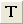

Beschriftungen zu Zeichnungen hinzufügen
Labelling-DataPoint
Nach Erstellen einer Grafik müssen Sie eventuell Beschriftungen hinzufügen, um die Zeichnungselemente mit Anmerkungen zu versehen. Der Dialog/die Hilfsmittel unten können verwendet werden, um diese Aufgabe zu erfüllen.
Beschriftungen mit der Registerkarte Beschriftung im Dialog Details Zeichnung hinzufügen
Sie können die Registerkarte Beschriftung des Dialogs Details Zeichnung verwenden, um Beschriftungen zu allen Punkten oder spezifischen Punkten einer Datenzeichnung hinzuzufügen. Diese Registerkarte Beschriftung befindet sich auf der rechten Seite des Dialogs Details Zeichnung, wenn das Symbol einer Datenzeichnung im linken Bedienfeld ausgewählt ist.
Um Beschriftungen mit Hilfe der Bedienelemente in Details Zeichnung hinzuzufügen:
- Klicken Sie doppelt auf die zu beschriftende Datenzeichnung.
- Stellen Sie auf dem sich öffnenden Dialog Details Zeichnung sicher, dass das Symbol der Datenzeichnung auf der linken Seite des Dialogs ausgewählt ist, und gehen Sie zur Registerkarte Beschriftung auf der rechten Seite des Dialogs.
- Aktivieren Sie das Kontrollkästchen Aktivieren.
- Beachten Sie, dass Sie für einige Diagrammtypen die Option Nur bei festgelegten Punkten zeigen wählen und eine mit Leerzeichen getrennte Reihe von Punktindizes im Textfeld eingeben können. Verwenden Sie das Stichwort "Anfang", um nur den ersten Punkt zu beschriften, und "Ende" oder "0", um den letzten Punkt in der Zeichnung zu beschriften.
- Verwenden Sie die Liste der Beschriftungsformate mit dem numerischen Anzeigeformat und der Formatzeichenkette, um Ihre Beschriftung zu erstellen. Beachten Sie, dass es die Option Beschriftungsform = Benutzerdefiniert gibt, mit der Sie Punkt mit Arbeitsblatt- und Projektmetadaten beschriften können.
- Passen Sie die beschriftungsrelevanten Einstellungen (Schriftart, Farbe, Drehung, Versatz, Position, autom. Neupositionierung, Verbindungslinien etc.) nach Bedarf mit Hilfe der Bedienelemente auf Registerkarte Beschriftung an. Oder schließen Sie den Dialog Details Zeichnung und passen Sie die Beschriftungen mit Hilfe der verfügbaren Schaltflächen auf der Minisymbolleiste Datenbeschriftung oder auf den Symbolleisten Stil und Format benutzerdefiniert an.
Hilfe bezüglich der spezifischen Bedienelemente auf der Registerkarte Beschriftung finden Sie unter:
| Hinweis: Werte aus einer zuvor zugewiesenen Beschriftungsspalte im Origin-Arbeitsblatt oder einer Excel-Arbeitsblattspalte können dazu verwendet werden, Datenpunkte in einem Diagramm zu beschriften. Das Beschriften von Datenpunkten auf diese Weise ist eine ältere Methode und bleibt vorrangig für die Rückwärtskompatibilität bestehen. In früheren Versionen von Origin wurden zugewiesene Beschriftungsspalten als ein separater Datensatz in Details Zeichnung angezeigt. Seit Origin 2020b werden die zugewiesenen Beschriftungsspalten als eine Anzeigeoption der Datenzeichnung behandelt und über die Registerkarte Beschriftung gesteuert. |
Beschriftungen mit Minisymbolleiste hinzufügen
Schaltfläche Datenbeschriftungen zeigen verwenden
Mit Origin 2020 wurden die kontextsensitiven Minisymbolleisten für eine schneller Diagrammanpassung eingeführt. Sie können ihre Bedienelemente auch dafür verwenden, die Datenpunkte zu beschriften:
- Um Beschriftungen schnell zu einer Zeichungsgruppe bzw. zu einer einzelnen Zeichnung hinzuzufügen bzw. von diesen zu entfernen, klicken Sie auf eine Zeichnung und auf der Minisymbolleiste
- auf die Registerkarte Gruppe
 . Klicken Sie dann auf die Schaltfläche Datenbeschriftungen zeigen
. Klicken Sie dann auf die Schaltfläche Datenbeschriftungen zeigen  , um Beschriftungen für alle Zeichnungen in der aktuellen Gruppe hinzuzufügen und zu entfernen. Standardmäßig werden die Y-Werte der Datenpunkte als Beschriftungen gezeigt.
, um Beschriftungen für alle Zeichnungen in der aktuellen Gruppe hinzuzufügen und zu entfernen. Standardmäßig werden die Y-Werte der Datenpunkte als Beschriftungen gezeigt.
- Klicken Sie auf der Registerkarte Einzeln
 auf die Schaltfläche Datenbeschriftungen zeigen , um Beschriftungen für alle Zeichnungen des aktuellen Diagramms hinzuzufügen und zu entfernen. Standardmäßig werden die Y-Werte der Datenpunkte als Beschriftungen gezeigt.
auf die Schaltfläche Datenbeschriftungen zeigen , um Beschriftungen für alle Zeichnungen des aktuellen Diagramms hinzuzufügen und zu entfernen. Standardmäßig werden die Y-Werte der Datenpunkte als Beschriftungen gezeigt.
- Wenn Sie eine Beschriftung für einen einzelnen Datenpunkt in Ihrem Diagramm schnell hinzufügen möchten, drücken Sie die Strg-Taste und klicken Sie einmal, um einen Einzelpunkt auszuwählen (Symbol, Balken etc.). Klicken Sie dann in der Minisymbolleiste auf die Schaltfläche Datenbeschriftungen zeigen . Standardmäßig wird der Y-Wert dieses Datenpunkts als Beschriftung gezeigt.
- Um eine einzelne Datenbeschriftung schnell benutzerdefiniert anzupassen, drücken Sie die Strg-Taste und klicken Sie auf die einzelne Beschriftung. Verwenden Sie die verfügbaren Schaltflächen, um die Beschriftung benutzerdefiniert anzupassen.
- Klicken Sie beim Beschriften eines Konturdiagramms auf die Zeichnung und klicken Sie auf die Schaltfläche Konturbeschriftungen zeigen . Wenn Sie die Schaltfläche Achsenskalierung vergrößern
 verwenden, um die Achsenskalierungen zu ändern (d. h. hineinzoomen), klicken Sie auf die Schaltfläche Zeiger
verwenden, um die Achsenskalierungen zu ändern (d. h. hineinzoomen), klicken Sie auf die Schaltfläche Zeiger  und dann erneut auf Ihr Konturdiagramm. Klicken Sie auf Beschriftungen neu positionieren, um die Beschriftungen auf dem vergrößerten Teil Ihres Diagramms neu zu zeichnen.
und dann erneut auf Ihr Konturdiagramm. Klicken Sie auf Beschriftungen neu positionieren, um die Beschriftungen auf dem vergrößerten Teil Ihres Diagramms neu zu zeichnen.
-
Eine Beschriftungsquelle wählen
Wenn Sie Beschriftungen aktiviert haben (entweder über die Registerkarte Beschriftung in Details Zeichnung oder die Schaltfläche der Minisymbolleiste Datenbeschriftungen zeigen), müssen Sie eine Beschriftungsquelle angeben:
- Wenn Sie die gesamten Zeichnungen beschriften, ist die Wahrscheinlichkeit hoch, dass Sie Zeichnungsdaten zum Beschriften der Zeichnung verwenden. Sie können die Beschriftungen auswählen und auf die Schaltfläche Beschriftungsquelle
 auf der Minisymbolleiste klicken, um eine Beschriftungsquelle (X, Y, XY etc.) zuzuweisen.
auf der Minisymbolleiste klicken, um eine Beschriftungsquelle (X, Y, XY etc.) zuzuweisen.
- Wenn Sie einen einzelnen Punkt beschriften, möchten Sie vielleicht Zeichnungsdaten oder Daten aus Spaltenbeschriftungszeilen verwenden oder Sie möchten eine benutzerdefinierte Datenbeschriftung mit Hilfe der LabTalk-Substitution erstellen.
- Eine größere Palette von Anpassungsoptionen erhalten Sie durch Doppelklick auf die Beschriftung(en) oder einen Klick auf die Schaltfläche Details Zeichnung öffnen
 , um den Dialog Details Zeichnung zu öffnen.
, um den Dialog Details Zeichnung zu öffnen.
Beschriftungen mit den Hilfsmitteln Text oder Anmerkung hinzufügen
Sie können mit dem Hilfsmittel Text einfügen  auf der Symbolleiste Hilfsmittel überall im Diagrammfenster Textbeschriftungen hinzufügen, und zwar eine Beschriftung nach der anderen.
Mit dem Hilfsmittel Anmerkung  auf der Symbolleiste Hilfsmittel können Sie spezifische Punkte auf 2D- und Konturdiagrammen genau auswählen und beschriften.
auf der Symbolleiste Hilfsmittel können Sie spezifische Punkte auf 2D- und Konturdiagrammen genau auswählen und beschriften.